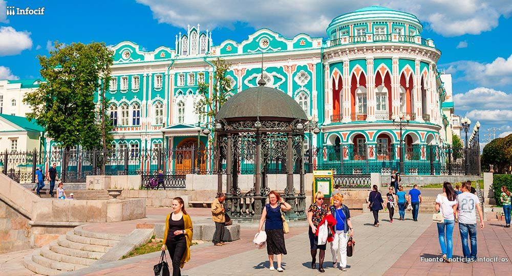
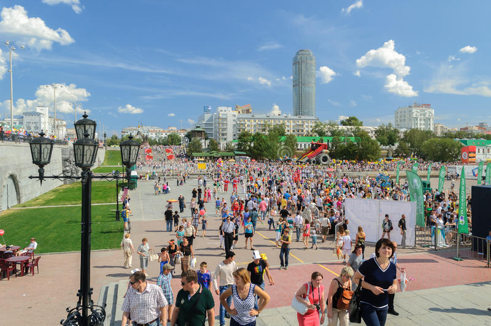

Para muchos, las primeras fábricas son lo primero en lo que piensan cuando escuchan sobre Ekaterimburgo. De hecho, la ciudad es famosa por su sector productivo. Al describir la naturaleza de la gente local, es importante mencionar que los residentes de la capital de Ural son personas tranquilas y algo reservadas. Por lo general, no son muy emocionales, pero no dudan en pedirles ayuda. Ayudarán incluso a completar extraños a pesar de que pueden parecer sombríos de un vistazo. Los indígenas no son muy habladores, por lo que puede parecer que no tienen nada que decir. Sin embargo, eso no es cierto. Habiendo conocido mejor a los residentes de Ekaterimburgo y habiendo encontrado intereses similares con ellos, los viajeros se sorprenderán al ver cómo los locales cambian drásticamente. Se pueden convertir fácilmente en 'habladores' como los italianos. Hay varios temas prohibidos en la región. Por ejemplo, es mejor no hablar de política y religión.
La gente local tiene una característica más importante. Es de vital importancia para ellos ser parte de algún objetivo importante y, sobre todo, común. En ese caso, se sienten relevantes y, por tanto, felices. Esta es una diferencia sorprendente entre la población local en comparación con muchas otras personas en Rusia. El objetivo común es el principal tesoro de la población local, y están listos para luchar por él hasta el final, olvidando incluso de la familia, que es un aspecto más importante en la vida de cualquier residente de Ekaterimburgo. Además de eso, todas las personas locales son famosas por su resistencia y amor por la justicia. Al describir la cocina nacional, es importante mencionar los platos principales. Todo tipo de platos de primer plato son muy populares en la región. Estos son Solyanka, Shchi, Ukha, Pelmeni ampliamente famosos (con varios rellenos), y champiñones Lactarius resimus en escabeche. Considere probar estos platos cuando visite la capital de Ural.

Personas en ekaterimburgo al frente de Dom N.i. Sevastyanova.
Los lugareños saben cómo divertirse a pesar de su temperamento tranquilo. A mediados de agosto, Ekaterimburgo alberga uno de los festivales más famosos de la región de los Urales, a saber, el festival de música electrónica Mekhanika. Este es uno de los eventos más grandes dedicados a este género musical en Rusia. Todos los años, numerosos fanáticos de la música industrial, el techno rave, el trance, el drum and bass y otros estilos musicales similares se reúnen en un solo lugar, en la ciudad de Zarenchy, cerca de la discoteca Riviera y cerca de Beloyarskoye Vodokhranilishche. Es un evento al aire libre, por lo que a los fanáticos de los campamentos realmente les gustará este evento, incluso si no les gusta la música electrónica. Además de un rico programa de música, los visitantes verán un increíble espectáculo pirotécnico y de láser.
El jazz también es bastante popular en Ekaterimburgo, y el festival al aire libre EverJazz es una prueba más de este hecho. El evento suele tener lugar a finales de junio. El festival de jazz suele tener la misma ubicación, a saber, Baza Otdykha Ivolga. Además de escuchar interesantes actuaciones de jazz, los visitantes tienen la oportunidad de participar en seminarios, clases de baile y clases magistrales de música. Entre los participantes del evento, hay músicos de Europa occidental y músicos de blues de Rusia. El festival tiene un ambiente agradable y familiar, y esa es una razón más para la popularidad de este evento.

Club de Jazz EverJazz en Ekatermburgo.
Ubicación geográfica de Club de Jazz EverJazz utilizando Datos de mapas © 2020 Google
Para familiarizarse con la cultura multidimensional de la región de los Urales, considere visitar el evento llamado Malachite Box. El Ural es la patria de uno de los autores de cuentos de hadas más famosos de Rusia, Pavel Bazhov. Durante el festival, hay un comercio justo donde los visitantes pueden comprar artículos hechos por los mejores maestros. Un interesante programa de música hace que sea aún más emocionante visitar el evento. El objetivo principal del festival es llamar la atención sobre la región como un destino turístico con un gran potencial. La ubicación es siempre la misma: el parque Skazov no está lejos de Ekaterimburgo, en la ciudad de Aramil.
La ciudad alberga un evento más interesante a mediados de agosto, el día de Ekaterimburgo. El festival es una forma más de celebrar el cumpleaños de la ciudad y su fundación el 18 de noviembre de 1723. Cuando la bandera del día festivo se levanta oficialmente, el festival se considera abierto. El programa cultural incluye conciertos musicales, representaciones teatrales, competiciones deportivas, un variado programa gastronómico, un comercio justo con artículos hechos a mano, presentaciones de baile, concursos de belleza y diversas actividades de entretenimiento para residentes e invitados de la ciudad. Todas las calles principales de la ciudad se convierten en el lugar de eventos festivos. Las agradables vacaciones culminan en la noche con magníficos fuegos artificiales. El estanque de la ciudad es la ubicación tradicional de los fuegos artificiales, por lo que es mejor tomar asientos cómodos y disfrutar de la vista espectacular.

Celebración día de Ekaterimburgo.